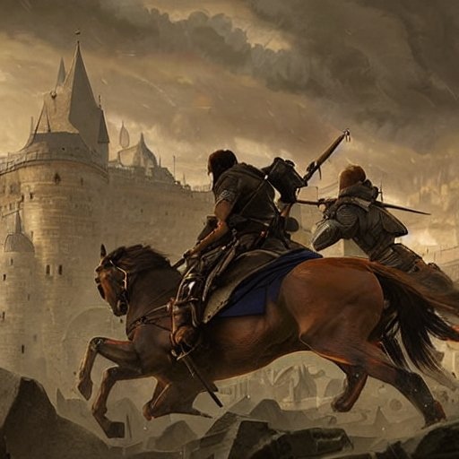

Você escolheu a 1ª opção

Os seguidores marcharam em direção ao castelo do Bispo Benedict. No entanto, o Bispo já estava ciente do plano de Lord Grey e havia se preparado para o ataque. A batalha foi longa e sangrenta, e no final, Lord Grey foi derrotado e capturado.